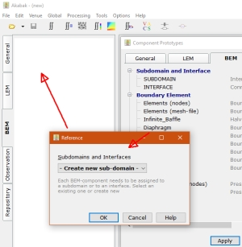
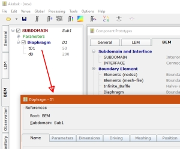
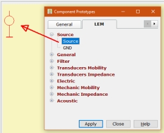

Form - New Component
Form - New Component
| Home |
 |
 |
 |
New components are created from this form.
Open this window via menu Edit/New Component, via keys Ctrl+N,
via the desktop-button or by dbl-clicking on
one of the tree-lists on the left hand side.
Alternatively, use the right-click-menu of the tree-list or of the schematic designer.
The tabs at the top indicate at which part the new component will be created. For example, Nodes of General will create a new data-base of coordinates at section General of the desktop.
An element from page BEM will create a component of acoustic boundaries or a pressure source. Because all BEM-components need to be assigned to a subdomain, there will be an intermediate dialog where you select the home-subdomain or home-interface of the new component.
Eventually, the associated parameter-dialog will be opened.
Lumped elements from page LEM will appear in the schemtic editor at page LEM of the desktop. Initially the component will be placed at the top-left corner from where you can drag it into position.
Parameters of LE-components are edited in the Parameter Editor at page LEM.
